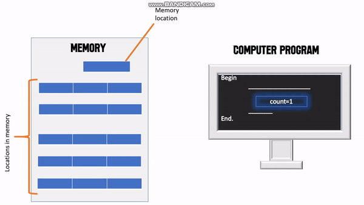

Iterative Statements
April 8,2021 by techiepototo
Iterative Statements, also known as loops, are used when parts of a program need to be repeated. If a section (may be a series of assignment, conditional and/ or even iterative statements) of the program will be executed repeatedly until an end condition is satisfied. To exit a loop, you must have a way of checking to see if the task has been completed. Once a loop terminates control is returned the first sentence after the loop block, that is, the subsequent code will be executed.
This following sentences are just to make to paragraph longer so that it shows the effect of the text wrapping around the image. Iterative Statements, also known as loops, are used when parts of a program need to be repeated. If a section (may be a series of assignment, conditional and/ or even iterative statements) of the program will be executed repeatedly until an end condition is satisfied. To exit a loop, you must have a way of checking to see if the task has been completed. Once a loop terminates control is returned the first sentence after the loop block, that is, the subsequent code will be executed.
There we go! Now back to the actual content:)
There are several types of loops. The following is a list of a few such iterations:
- For Loop
- While Loop
- Do-While Loop
- While-Do Loop
- Repeat Loop
- Repeat-Until Loop
- Nested For Loop
Assignment Statements
April 8,2021 by techiepototo
To put it simply, an assignment statement is one which sets a value to a variable. In actuality, this value is stored in a memory location which is denoted by a variable name. As seen in figure 1.0, the number 1 is “assigned” to the variable “count”. When the program is compiled and run, the number 1 is the placed in a memory location which the variable name “count” points to.
Here we go again. Just to show the effect... To put it simply, an assignment statement is one which sets a value to a variable. In actuality, this value is stored in a memory location which is denoted by a variable name. As seen in figure 1.0, the number 1 is “assigned” to the variable “count”. When the program is compiled and run, the number 1 is the placed in a memory location which the variable name “count” points to. To put it simply, an assignment statement is one which sets a value to a variable. In actuality, this value is stored in a memory location which is denoted by a variable name. As seen in figure 1.0, the number 1 is “assigned” to the variable “count”. When the program is compiled and run, the number 1 is the placed in a memory location which the variable name “count” points to. To put it simply, an assignment statement is one which sets a value to a variable. In actuality, this value is stored in a memory location which is denoted by a variable name. As seen in figure 1.0, the number 1 is “assigned” to the variable “count”. When the program is compiled and run, the number 1 is the placed in a memory location which the variable name “count” points to.